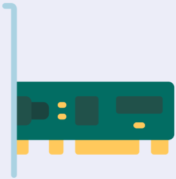

Son infraestructuras o redes de comunicación que se han diseñado específicamente para la transmisión de información mediante el intercambio de datos.
Permiten llevar a cabo todo tipo de operaciones en tiempo real y superando enormes distancias, como: •Compras electrónicas y movimientos de capitales. •Interacciones sociales, teleconferencias, videollamadas. •Transmisión de datos, correo electrónico y compartir recursos.
Servidor
Un servidor es una computadora o sistema que proporciona servicios o recursos a otras computadoras llamadas clientes a través de una red.
Sistema de cableadO
Se refiere al cable coaxial o de fibra óptica que tiene la función de establecer los enlaces de datos entre las máquinas.
Tarjetas de interfaz de red

Parte esencial de una conexión, es el esquema de red. El cable va conectado a la tarjeta para interpretar los paquetes de datos.